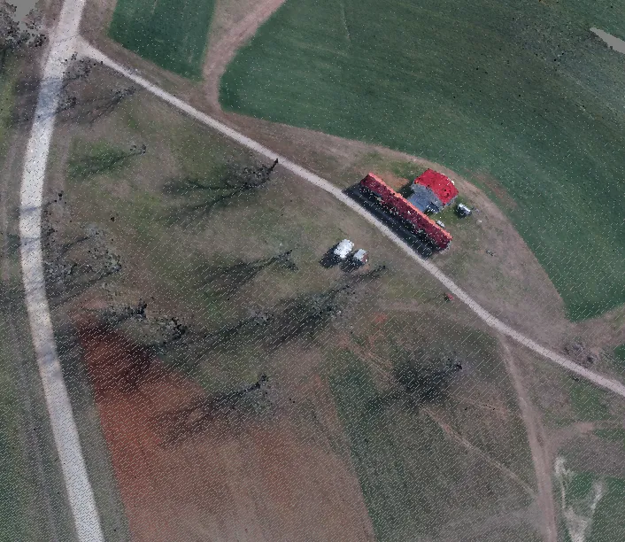
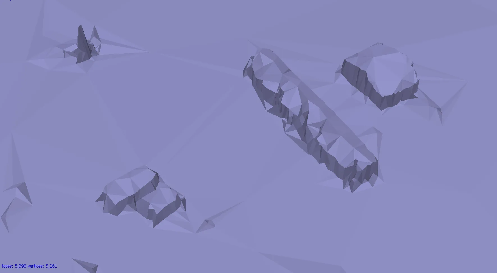
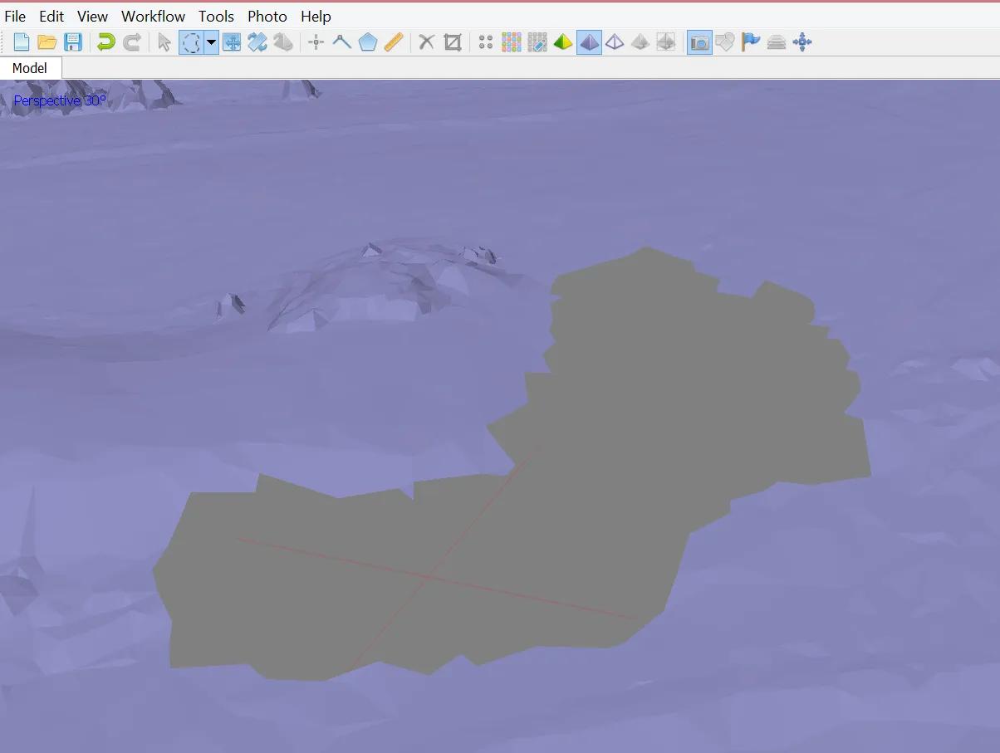

Imagery Processing
Center for Geospatial Analytics at North Carolina State University
Photogrammetric process

Photogrammetric process

UAS data
What do we get after the flight mission?

Digital imagery

- usually on the camera SD card
- can be geotagged (depends on camera)
- Camera lens location is “written into” each photo’s EXIF file
- this is not necessarily the case…
Flight log
- Onboard Inertial Measurement Unit (IMU) accurately measures the orientation of airborne sensors,
- Information is logged into a text file (flight log),
- Contains elements of exterior orientation (EO, more later in the lecture)

GCP coordinates
- Measured by GPS coordinates of the panels set before the flight
- Photo ID points (distinguishable ground features) can be surveyed later on
- It is important to know the GCPs coordinate system (spatial reference system)

Spatial reference system
- Defines how the two-dimensional, projected map in your GIS is related to real places on the earth
- It is crucial to know what is your data reference system!

- There are global map projections, but most map projections are created and optimized to project smaller areas of the earth’s surface
- There are two different types of coordinate reference systems: Geographic Coordinate Systems and Projected Coordinate Systems
- Spatial reference list (EPSG codes for coordinate reference systems)
UAS data processing outputs
What do we get after processing the data?

Orthophoto
- Aerial imagery geometrically corrected (“orthorectified”) such that the scale is uniform
- Raster: consists of red, green, and blue bands

Pointcloud
- Representation of the external surface of an object
- Set of vertices in a three-dimensional coordinate system
- Vector or raster?
- Dale Lutz once said, “point cloud is a badly behaved raster”


Digital imagery


Digital Elevation Model

In the past: Shape of the ground surface must be known in order to remove the effects of relief displacement
Now: Computed automatically by Structure from Motion
Flight log
- Log file contains elements of exterior orientation that are measured by onboard Inertial Measurement Unit (IMU) and written into a text file
- Sometimes (most DJI products) exterior orientation parameters are saved in photos’ EXIF file
- Log contains information about the location of the camera, not the location of the depicted object - more info in this section of lecture 3
Interior orientation
- In the past: camera calibration report
- Now: Self-calibration (auto-calibration) is the process of determining intrinsic camera parameters directly from uncalibrated images

- Can be automatically derived using Structure from Motion (SfM) methods
Ground Control Points
- GCP - Target in the project area with known 3 coordinates (X, Y, Z or lat, long, alt)
- For more information about placing targets and importance of GCPs see this section of lecture 3
- For more information about processing the data with GCPs see intro to the assignment

Agisoft Metashape Professional
- Image-based solution aimed at creating 3D content from still images
- Operates with arbitrary images and is efficient in both controlled and uncontrolled conditions
- Both image alignment and 3D model reconstruction are fully automated
Processing workflow
Preprocessing stage:

- Loading photos into Metashape
- Inspecting loaded images, removing unnecessary images
Processing workflow
Processing stage:

- Aligning photos
- Building dense point cloud
- (optional: editing dense point cloud)
- Building mesh (3D polygonal model)
- (optional: editing mesh)
- Generating texture
- Building DSM and orthomosaic
Exporting results
Aligning photos
At this stage, Agisoft Metashape implements SfM algorithms to monitor the movement of features through a sequence of multiple images:
- Obtains the relative location of the acquisition positions
- Refines camera calibration parameters
- Sparse point cloud and a set of camera positions are formed

Bundle Block Adjustment
- Non-linear method for refining structure and motion
- Minimizing reprojection error
- Detecting image feature points (i.e., various geometrical similarities such as object edges or other specific details)

Building dense point cloud
At the stage of dense point cloud generation, Agisoft calculates depth maps for every image
- Quality: Highest, High, Medium, Low, Lower > the higher quality, the more accurate camera position estimates, but the process is more time-consuming


Building mesh
- Source data > the source for the mesh generation
- Sparse cloud > fast 3D model generation (low quality)
- Dense cloud > high-quality output based on the previously reconstructed dense point cloud
- Face count > the maximum face count in the final mesh


Optional: Editing mesh
- Automatic filtering based on specified criteria:
- Connected component size
- Polygon size
- Manual polygon removal
- Fixing mesh topology
- Editing mesh in the external program
- Export mesh for editing in the external program
- Import edited mesh


Generating DSM

Parameters
- Source data: Dense point cloud
- Interpolation
- Disabled: leads to accurate reconstruction results since only areas corresponding to dense point cloud points are reconstructed
- Enabled (recommended): Interpolation mode - Agisoft will calculate DEM for all areas of the scene that are visible on at least one image.
Generating orthophoto

Parameters
- Surface: DEM
- Blending mode
- Mosaic (default): Implements an approach with data division into several frequency domains, which are blended independently
- Average: Uses the weighted average value of all pixels from individual photos
- Disabled: The color value for the pixel is taken from the photo with the camera view being almost along the normal to the reconstructed surface in that point.
Exporting results & saving intermediate results
Orthophoto export
Batch processing